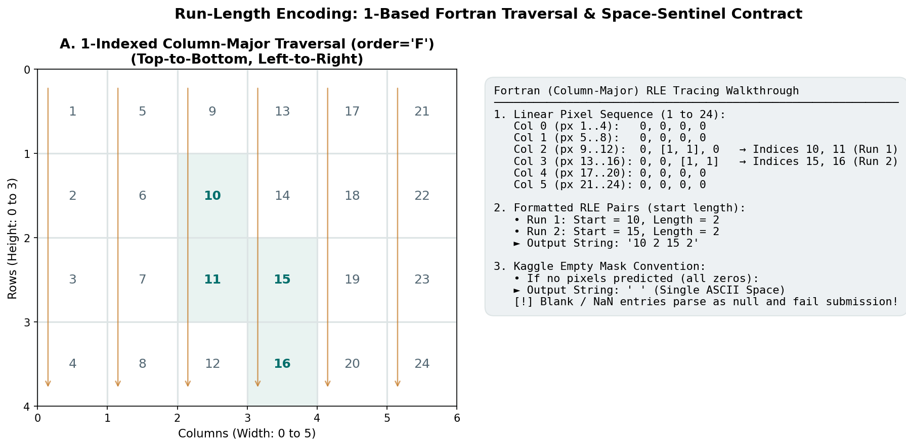

Run-Length Encoding and First Kaggle Submission
You have constructed a PyTorch Dataset, isolated a combination-stratified validation partition, configured experiment tracking with W&B, trained a baseline U-Net, and calibrated your post-processing thresholds. Now comes the final milestone objective: converting model predictions into a valid, rejected-proof Kaggle submission file.
Submitting a machine learning prediction file to an automated competition platform is a strict software engineering contract. A single missing row, an extra comma, a transposed axis, or an empty cell parsed as NaN will cause Kaggle's evaluation engine to reject your submission with a generic error message.
This guide details the complete conceptual chain from 2D binary masks to RLE strings, demystifies the 1-indexed Fortran column-major traversal order, explains the single-space sentinel rule, and provides a comprehensive submission validation checklist.
1. Motivation: The Prediction-to-Submission Pipeline
Before writing any serialization code, visualize the complete data transformation lifecycle:
┌─────────────────────────────────────────────────────────────────────────────┐
│ The Prediction-to-Submission Chain │
├───────────────────┬───────────────────┬───────────────────┬─────────────────┤
│ 1. Model Output │ 2. Post-Process │ 3. RLE Encoding │ 4. CSV Assembly │
│ Logits Z ∈ R^4 │ Probabilities P │ Fortran order 'F' │ Match template │
│ [4, 128, 800] │ Binary Masks M │ Pairs: (start,len)│ 12,000 rows │
│ │ {0.0, 1.0} │ Empty = ' ' │ ID, image, class│
└───────────────────┴───────────────────┴───────────────────┴─────────────────┘Every test image in data/public/test/ must pass through this exact chain, resulting in four rows in your final CSV file (one for each defect category).
2. RLE Indexing and Traversal Order
Run-Length Encoding (RLE) is a lossless compression format for binary arrays. Instead of storing 102,400 individual pixel booleans, RLE stores pairs of integers:
The Two Non-Negotiable Rules:
Rule 1: 1-Based Indexing
In Python, arrays are 0-indexed (the first element is index 0). In standard Kaggle RLE, the first pixel is index 1.
Rule 2: Column-Major (Fortran order='F') Traversal
Standard image processing traverses rows from left to right (row-major, C order). Kaggle surface segmentation traverses columns from top to bottom, then moves to the next column (column-major, Fortran order).

Figure 8.1: Numbered toy grid (\(4 \times 6\)) demonstrating 1-indexed column-major traversal (order='F'). Pixels are read top-to-bottom down column 0, then column 1, and so forth.Walking Through the Toy \(4 \times 6\) Grid:
Consider a canvas of height \(H=4\) rows and width \(W=6\) columns (total pixels = 24). A defect occupies:
- Column 2: row 1 and row 2 (active pixels)
- Column 3: row 2 and row 3 (active pixels)
Let us calculate the 1-indexed Fortran positions:
- At \((r=1, c=2)\): \(\text{Index} = 2 \times 4 + 1 + 1 = \mathbf{10}\)
-
At \((r=2, c=2)\): \(\text{Index} = 2 \times 4 + 2 + 1 = \mathbf{11}\) \(\to\) First run starts at index 10 with length 2.
-
At \((r=2, c=3)\): \(\text{Index} = 3 \times 4 + 2 + 1 = \mathbf{15}\)
- At \((r=3, c=3)\): \(\text{Index} = 3 \times 4 + 3 + 1 = \mathbf{16}\) \(\to\) Second run starts at index 15 with length 2.
The final encoded RLE string is:
3. The Empty Mask Sentinel: The Single-Space Rule
In this competition, almost half of industrial images contain no defects at all, and individual defect categories (like defect_b) are absent in \(>97\%\) of images. What should your code write into the mask_rle column when your model predicts that an image is completely clean?
THE EMPTY MASK CSV CONTRACT
┌─────────────────────────────────────────┬─────────────────────────────────────────┐
│ SUBMITTED CSV RULE │ WHY IT MATTERS │
├─────────────────────────────────────────┼─────────────────────────────────────────┤
│ EXACTLY ONE ASCII SPACE: " " │ Kaggle's automated submission parser │
│ (A string of length 1 containing ' ') │ treats completely blank CSV fields as │
│ │ null/NaN values and rejects the file! │
└─────────────────────────────────────────┴─────────────────────────────────────────┘Inspect data/public/sample_submission.csv. You will observe:
ID,image_id,defect_type,mask_rle
1,TEST_0001,defect_a,
2,TEST_0001,defect_b,
3,TEST_0001,defect_c,
4,TEST_0001,defect_d, " ").
- If you write an empty string
"", pandas exports,with no content. Kaggle parses this asNaNand rejects your submission! - In your encoder, explicitly enforce:
if mask.sum() == 0: return " "
4. The Submission File Schema
The template file data/public/sample_submission.csv is the authoritative schema. Your output file must match it row-for-row:
1. File Structure:
- Total Images: 3,000 test images in
data/public/test/. - Rows per Image: 4 rows (
defect_a,defect_b,defect_c,defect_d). - Total Rows: Exactly 12,001 lines (1 header row + 12,000 prediction rows).
2. Exact Column Headers:
ID,image_id,defect_type,mask_rle| Column Name | Data Type | Permitted Values / Format | Example |
|---|---|---|---|
ID |
Integer | \(1, 2, 3, \dots, 12000\) (sequential 1-based index) | 42 |
image_id |
String | Matches test filename without .jpg |
TEST_0042 |
defect_type |
String | One of: defect_a, defect_b, defect_c, defect_d |
defect_c |
mask_rle |
String | Valid RLE string or single ASCII space " " |
"25641 4 25769 4" |
5. The Encode-Decode Roundtrip Invariant
Before trusting any RLE encoder in your submission pipeline, verify the roundtrip invariant:
If you encode a binary mask and immediately decode the resulting string back into a 2D array, the resulting array must be bit-for-bit identical to the original mask.
def verify_roundtrip(mask_2d: np.ndarray) -> bool:
rle_str = rle_encode(mask_2d)
recovered = rle_decode(rle_str, shape=mask_2d.shape)
return np.array_equal(mask_2d, recovered)Run this test on:
- An all-zero mask (empty).
- An all-ones mask (full).
- A single 1-pixel defect at \((0, 0)\).
- A single 1-pixel defect at \((127, 799)\) (the opposite canvas corner).
- Complex multi-blob synthetic masks.
6. Pre-Submission Validation Checklist
Before submitting your generated CSV file to Kaggle, run this automated verification checklist in Python. Every check must pass:
import pandas as pd
import numpy as np
def validate_submission_file(csv_path: str, template_path: str = "data/public/sample_submission.csv"):
print(f"Validating submission: {csv_path}...")
# 1. Row count check
df = pd.read_csv(csv_path, keep_default_na=False) # keep_default_na=False preserves " "
assert len(df) == 12000, f"Row count error: expected 12,000, got {len(df)}"
print("✓ Row count: exactly 12,000 prediction rows.")
# 2. Column names check
expected_cols = ["ID", "image_id", "defect_type", "mask_rle"]
assert list(df.columns) == expected_cols, f"Column mismatch: expected {expected_cols}, got {list(df.columns)}"
print("✓ Columns: headers match authoritative schema exactly.")
# 3. No Null / NaN check
for col in ["ID", "image_id", "defect_type"]:
assert df[col].isnull().sum() == 0, f"Null values detected in {col}!"
print("✓ Identifiers: zero null or missing values.")
# 4. Empty mask representation check
empty_masks = df[df["mask_rle"].str.strip() == ""]
print(f"• Predicted empty masks: {len(empty_masks)} / 12,000 ({len(empty_masks)/12000*100:.1f}%)")
# 5. RLE token syntax and in-bounds checks
non_empty = df[df["mask_rle"].str.strip() != ""]
print(f"• Predicted active masks: {len(non_empty)} / 12,000")
total_canvas_pixels = 128 * 800
for idx, row in non_empty.iterrows():
tokens = [int(x) for x in row["mask_rle"].split()]
assert len(tokens) % 2 == 0, f"Row {row['ID']} has odd number of RLE tokens!"
starts = tokens[0::2]
lengths = tokens[1::2]
for s, l in zip(starts, lengths):
assert s >= 1, f"Row {row['ID']} start index < 1!"
assert l >= 1, f"Row {row['ID']} length < 1!"
assert s + l - 1 <= total_canvas_pixels, f"Row {row['ID']} run exceeds canvas boundary!"
print("✓ RLE Syntax: all non-empty strings have even token counts and valid bounds.")
# 6. Template ordering check
template = pd.read_csv(template_path)
assert np.array_equal(df["image_id"].values, template["image_id"].values), "Image ID sequence mismatch!"
assert np.array_equal(df["defect_type"].values, template["defect_type"].values), "Defect type sequence mismatch!"
print("✓ Template ordering: row order matches sample_submission.csv identically.")
print("\n★ ALL SUBMISSION VALIDATION CHECKS PASSED! Ready for Kaggle upload.")7. Common Mistakes and Diagnostics
| Bug / Pitfall | Root Cause | Observable Symptom | Practical Diagnostic |
|---|---|---|---|
| Kaggle Null Rejection | Writing "" instead of " " for empty masks. |
Kaggle error: "Submission contains NaN or Null values". | Load with keep_default_na=False; check for nulls. |
| Row Count Error | Filtering out empty rows from your output CSV. | Submission file has fewer than 12,000 rows. | Verify len(df) == 12000. Clean images must have rows! |
| C-Order Shearing | Flattening mask in row-major order (mask.flatten()). |
Private score near 0; masks transposed diagonally. | Always pass order='F' to flatten() and reshape(). |
| 0-Indexed RLE | Forgetting to add \(+1\) to starts during encoding. | Masks shifted upward by 1 pixel in evaluation. | Check single pixel at \((0, 0)\) encodes to "1 1". |
| Wrong ID Column | Emitting 0-indexed IDs (\(0..11999\)) instead of \(1..12000\). | Kaggle rejection or row alignment failure. | Compare df["ID"].values to sample_submission.csv. |
8. Decisions You Must Make
- Inference Batching: When generating test predictions, use a
DataLoaderwithshuffle=Falseandbatch_size=8or16to accelerate throughput. - Threshold Application: Apply your calibrated validation thresholds \((\tau, A_{\min})\) per class during the inference pass.
- Atomic File Saving: Write predictions to a temporary file (e.g.,
submission_temp.csv), execute your validation checklist, and only rename tosubmission.csvonce all assertions pass.
9. Try It: Run a Complete Roundtrip on a Toy Mask
Run this self-contained script to verify Fortran RLE encoding, single-space handling, and decoding on a toy canvas:
import numpy as np
def rle_encode_toy(mask):
if mask.sum() == 0:
return " "
pixels = mask.flatten(order="F")
padded = np.concatenate([[0], pixels, [0]])
diffs = np.diff(padded)
starts = np.where(diffs == 1)[0] + 1
ends = np.where(diffs == -1)[0] + 1
lengths = ends - starts
runs = []
for s, l in zip(starts, lengths):
runs.extend([str(s), str(l)])
return " ".join(runs)
def rle_decode_toy(rle_str, shape):
if not rle_str or rle_str.strip() == "":
return np.zeros(shape, dtype=np.uint8)
tokens = [int(x) for x in rle_str.split()]
starts = np.array(tokens[0::2]) - 1
lengths = np.array(tokens[1::2])
flat = np.zeros(shape[0] * shape[1], dtype=np.uint8)
for s, l in zip(starts, lengths):
flat[s : s + l] = 1
return flat.reshape(shape, order="F")
# 1. Test empty mask
empty_mask = np.zeros((4, 6), dtype=np.uint8)
assert rle_encode_toy(empty_mask) == " ", "Empty mask must return single space!"
# 2. Test active mask
active_mask = np.zeros((4, 6), dtype=np.uint8)
active_mask[1:3, 2] = 1 # 2 pixels in col 2 (indices 10, 11)
encoded = rle_encode_toy(active_mask)
print(f"Active mask RLE: '{encoded}'")
assert encoded == "10 2", f"Expected '10 2', got '{encoded}'"
# 3. Test roundtrip
recovered = rle_decode_toy(encoded, shape=(4, 6))
assert np.array_equal(active_mask, recovered), "Roundtrip reconstruction failed!"
print("✓ RLE encoding, empty-space sentinel, and roundtrip verified successfully!")For the complete standalone RLE testing script with full boundary assertions, inspect:
👉 docs/milestone_2_student_guide/examples/toy_rle_roundtrip.py
10. Authoritative Documentation & References
- Pandas CSV Serialization:
pandas.DataFrame.to_csvDocumentation - NumPy
flatten& Fortran Ordering: NumPyndarray.flattenDocumentation